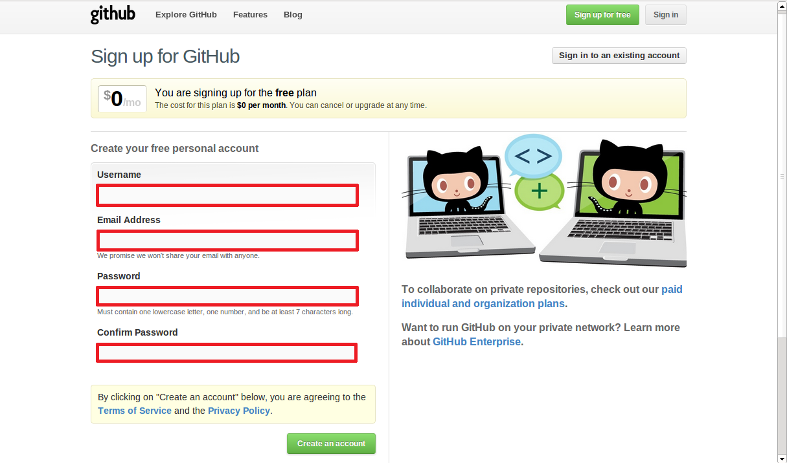

GitHub のセットアップ¶
| 更新日付: | 2012 年 11 月 24 日 |
|---|
はじめに¶
GitHub にアカウントを作成し、Ubuntu から使用する方法です。
GitHub のアカウント作成¶
GitHub のサイトにアクセスします。

無料プランを選択する場合は、右上にある「Create a free account」をクリックします。 有償プランを選択する場合は、「Plans, Pricing and Signup」をクリックし希望のプランを選択します。

簡単なアカウント情報を入力して、アカウントを作成します。 ユーザー名は半角英数字と「-」しか使用できません。また、「-」から始まるユーザー名は使用できません。
{kind=link}
アカウントが登録されるとユーザーページが作成されます。
右上にある「Account settings」をクリックすると登録内容を変更することができます。
SSH Key の登録¶
GitHub では、リポジトリーへのアクセスは、SSHを利用した公開鍵認証で行います。 公開鍵認証に必要な SSH Key の作成と GitHub への登録が必要です。
SSH Key の作成¶
SSH Key は ssh-keygen コマンドで作成することができます。
$ ssh-keygen -t rsa -C "n.nkmrg@gmail.com"
Generating public/private rsa key pair.
Enter file in which to save the key (/home/username/.ssh/id_rsa):
Enter passphrase (empty for no passphrase):
Enter same passphrase again:
Your identification has been saved in /home/username/.ssh/id_rsa.
Your public key has been saved in /home/username/.ssh/id_rsa.pub.
The key fingerprint is:
myfingerpirnt n.nkmrg@gmail.com
The key's randomart image is:
+--[ RSA 2048]----+
| o .+*... |
| . + ..=. |
| o . o.+ |
| . + . o o |
| . = S o |
| = . . |
| . E . . |
| . . |
| |
+-----------------+
$ ls ~/.ssh
-rw------- 1 username username 1766 11月 24 17:46 id_rsa
-rw-r--r-- 1 username username 399 11月 24 17:46 id_rsa.pub
id_rsa は秘密鍵、id_rsa.pub は公開鍵です。 id_rsa は他に流出しないように大切に保管する必要があります:。パーミションは 600 でないと認証に失敗します。 id_rsa.pub の内容を GitHub に登録します。
SSH Key の登録¶
GitHub のアカウントページの右上の「Account settings」ボタンを押し「SSH Key」のメニューを選択します。
{kind=link}
「Title」に適当な鍵の名前を入力し、「Key」に id_rsa.pub の内容をコピーして貼り付けます。
$ cat ~/.ssh/id_rsa.pub
ssh-rsa mypublickey n.nkmrg@gmail.com
登録したメールアドレスに以下の題名のメールが届けば、公開鍵の登録は完了です。
[GitHub] A new public key was added to your account
GitHub との公開鍵認証の動作確認¶
公開鍵の登録が完了したら、GitHub との公開鍵認証の動作確認を行なっておきます。
$ ssh -T git@github.com
The authenticity of host 'github.com (207.97.227.239)' can't be established.
RSA key fingerprint is myfingerprint.
Are you sure you want to continue connecting (yes/no)? yes
Warning: Permanently added 'github.com,207.97.227.239' (RSA) to the list of known hosts.
Hi nnkmr! You've successfully authenticated, but GitHub does not provide shell access.
クライアント環境(Ubuntu)の準備¶
Ubuntu には git のパッケージが用意されていて、簡単にインストールすることができます。
$ sudo apt-get install git
Ubuntu 12.10 では git 1.7.10 がインストールされます。
$ dpkg-query -l git
ii git 1:1.7.10.4-1ubuntu1 amd64 fast, scalable, distributed revision control system
Git の初期設定をします。
$ git config --global user.name 'n_nkmr'
$ git config --global user.email 'n.nkmrg@gmial.com'
$ git config --global color.ui auto
$ more ~/.gitconfig
設定ファイルは ~/.gitconfig に保存されます。
とりあえず、プロジェクトのレポジトリを作成します。
$ mkdir -p ~/git/myproject
$ cd ~/git/sphinx/myproject
$ git init
Initialized empty Git repository in /home/username/git/myproject/.git/
$ touch README
$ git add README
$ git commit -m 'first commit'
$ git remote add origin git@github.com:nnkmr/myproject.git
$ git push -u origin master
ファイルを更新したり、作成したりしたら、とりあえずコミットしておく。
$ git add .
$ git commit -m "COMMENT"
作業が完了したり、切りがついたら、サーバーに push して共有します。
$ git push
コミットの状況や過去の履歴は簡単に確認できます。
$ git status
$ git log
操作方法が分からなくなったら、help で確認することができます。
$ git help